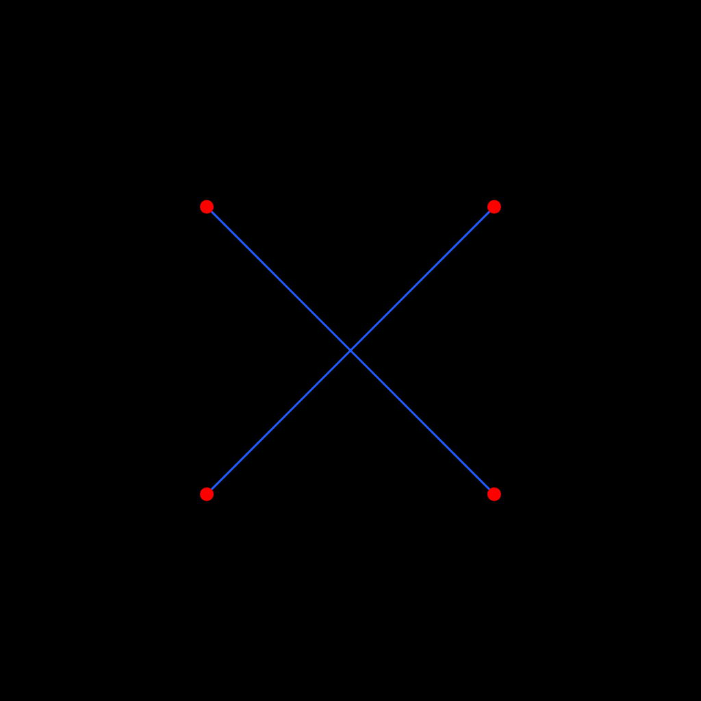

 S0-1
S0-1流线 / 不可判 / 不可判 / 不可判
前端有独立小盖，主盖外界不清；臂根连至底部，顶壳遮住交界。 S0-2
S0-2流线 / 承座 / 不可判 / 不可判
四个浅座有清楚的斜横接口；前段小盖可辨，主壳与侧座局部相叠。 S0-3
S0-3流线 / 承座 / 不可判 / 不可判
四处浅肩搭住深色臂，肩壳无独立侧界；端下黑件难辨，顶面纵线末端淡失。 S1-1
S1-1机壳：方正
直侧、折角及一道横缝清楚；深色臂没入壳侧，未见承座横缝。 S1-2
S1-2机壳：方正
主壳直侧、尾端切角；前半盖横缝上折沿两侧到前缘，尾端黑长孔无可辨镜头。 S1-3
S1-3机壳：方正
侧边直、尾部削角，臂肩圆滑过渡；小矩形缝未勾出主盖。 S2-1
S2-1臂根：不可判
臂根内侧有三角轮廓，未见明确横接缝；顶面只见一道横缝。 S2-2
S2-2臂根：承座
身侧肩座遮住轮廓，形类及净宽难定；蓝叉穿壳，红点覆毂取周缘中心，扁镜窗内收。 S2-3
S2-3臂根：承座
四肩收口套住深色臂；上端小盖清楚，主盖边缘与曲面混合。 S3-1
S3-1臂根：铰接
四根可见圆轴及活动节；横缝将前后面分开，主盖周界不清。 S3-2
S3-2臂根：铰接
四处可见金属轴座与转节；狭长盖边沿两侧回到端部。 S3-3
S3-3臂根：铰接
四处可见轴销；下端窄椭圆光学窗从壳沿下露出，支承及完整边界被遮。 S4-1
S4-1相机舱：前伸
鼻外小模组两侧有支轴，孔面可见但俯仰难定；四臂根被壳遮住。 S4-2
S4-2相机舱：前伸
鼻外模组有两侧支承；可见深孔，镜头朝向含混。臂根止于壳下。 S4-3
S4-3相机舱：前伸
前端模组架在两侧支耳之间，靠前窄面可见扁椭圆孔；只见一道短盖缝。 S5-1
S5-1上盖：多盖
两道横缝和两侧纵缝相接，三段盖面可追；黑臂伸入壳侧。 S5-2
S5-2上盖：多盖
上中下盖缝相接；下端突出黑件未辨清光学面。深臂与壳的重叠处无明显关节。 S5-3
S5-3上盖：不可判
两块内嵌盖均有独立边缝，未见清楚第三块；肩壳侧界难定。